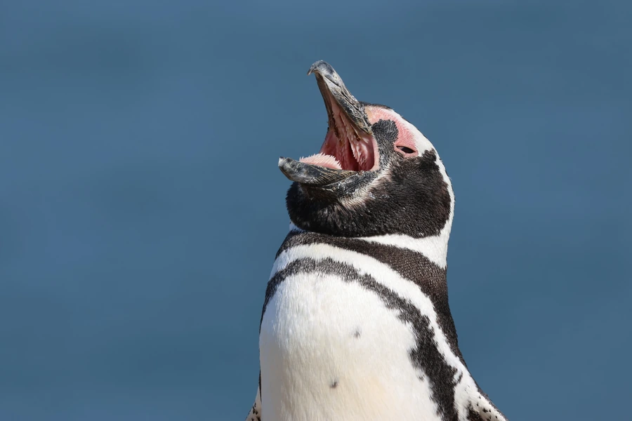

鸟类 · 动物界
麦哲伦企鹅 Spheniscus magellanicus

南美洲南部海岸的环企鹅，胸前两道黑色环带、眼周裸皮粉红，夏季在巴塔哥尼亚沿岸集群繁殖，冬季随洋流北迁觅食。
- 分类
- 门脊索动物门纲鸟纲目企鹅目科企鹅科属环企鹅属
- 栖息环境
- 南美南部海岸、岛屿的灌丛草地与沙质坡地，近岸冷水海域觅食
- 地理分布
- 阿根廷、智利南部海岸与福克兰群岛繁殖，越冬北至巴西东南部
- 保护级别
- IUCN 近危（NT）；CITES 附录Ⅱ
物种志
麦哲伦企鹅体高约 60–75 厘米，体重 3.5–6.5 千克，雄性略大。头部黑色，眼周有一圈裸露的粉红色皮肤，下颌基部有一条白色带纹延伸至眼后；胸前有两条黑色环带，下环带较宽，腹部白色，鳍状肢内侧有粉色斑。喙粗壮、尖端钩曲，适于抓握游动的鱼。
它们繁殖于南美洲南部的巴塔哥尼亚海岸与福克兰群岛，是南美数量最多的企鹅。每年 9–10 月回到岸上，在灌丛、草地或沙坑中挖巢，每窝产两枚卵，双亲轮流孵卵约 40 天。育雏期亲鸟每天出海捕食沙丁鱼、鳀鱼和鱿鱼，往返数十千米。繁殖结束后，成鸟随寒流北上，可远达巴西东南部海域越冬。主要威胁包括渔网误捕、油污污染、旅游干扰与气候引起的鱼群变动，部分繁殖地种群持续下降。
形态与习性
- 体高约 60–75 cm，体重 3.5–6.5 kg
- 食性沙丁鱼、鳀鱼、鱿鱼与小型甲壳类
- 繁殖9–10 月上岸筑巢，每窝两枚卵，孵卵约 40 天
- 迁徙繁殖后随寒流北上，越冬可远达巴西东南部
- 巢址灌丛下、草地或沙坑中的浅穴，常集群
- 种群现状全球成鸟约 120 万对，部分繁殖地持续下降
- 寿命约 15–20 年
趣味知识
- 麦哲伦企鹅胸前的两条黑带像系了两道腰带，是识别它的关键。
- 繁殖结束后它们会一路向北游到巴西海域越冬，行程数千千米。
- 它挖巢时用喙和爪在灌丛下刨出浅坑，巢口常被枝叶遮住。